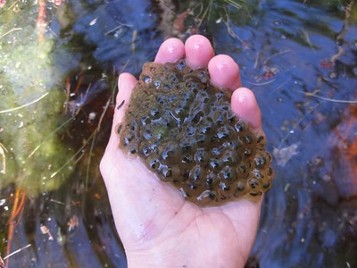

A Frogs Life
Frogs may lay their in eggs as clumps, surface films, strings, or individually. Around half of species deposit eggs in water, others lay eggs in vegetation, on the ground or in excavations. The tiny yellow-striped pygmy eleuth (Eleutherodactylus limbatus) lays eggs singly, burying them in moist soil. The smoky jungle frog (Leptodactylus pentadactylus) makes a nest of foam in a hollow. The eggs hatch when the nest is flooded, or the tadpoles may complete their development in the foam if flooding does not occur. The red-eyed treefrog (Agalychnis callidryas) deposits its eggs on a leaf above a pool and when they hatch, the larvae fall into the water below.
In certain species, such as the wood frog (Rana sylvatica), symbiotic unicellular green algae are present in the gelatinous material. It is thought that these may benefit the developing larvae by providing them with extra oxygen through photosynthesis. The interior of globular egg clusters of the wood frog has been also been found to be up to 6 °C (11 °F) warmer than the surrounding water and this speeds up the development of the larvae. The larvae developing in the eggs can detect vibrations caused by nearby predatory wasps or snakes, and will hatch early to avoid being eaten. In general, the length of the egg stage depends on the species and the environmental conditions. Aquatic eggs normally hatch within one week when the capsule splits as a result of enzymes released by the developing larvae.
The larvae that emerge from the eggs, known as tadpoles (or occasionally polliwogs). Tadpoles lack eyelids and limbs, and have cartilaginous skeletons, gills for respiration (external gills at first, internal gills later), and tails they use for swimming. As a general rule, free-living larvae are fully aquatic, but at least one species (Nannophrys ceylonensis) has semiterrestrial tadpoles which live among wet rocks.
From early in its development, a gill pouch covers the tadpole's gills and front legs. The lungs soon start to develop and are used as an accessory breathing organ. Some species go through metamorphosis while still inside the egg and hatch directly into small frogs. Tadpoles lack true teeth, but the jaws in most species have two elongated, parallel rows of small, keratinized structures called keradonts in their upper jaws. Their lower jaws usually have three rows of keradonts surrounded by a horny beak, but the number of rows can vary and the exact arrangements of mouth parts provide a means for species identification. In the Pipidae, with the exception of Hymenochirus, the tadpoles have paired anterior barbels, which make them resemble small catfish. Their tails are stiffened by a notochord, but does not contain any bony or cartilaginous elements except for a few vertebrae at the base which forms the urostyle during metamorphosis. This has been suggested as an adaptation to their lifestyles; because the transformation into frogs happens very fast, the tail is made of soft tissue only, as bone and cartilage take a much longer time to be broken down and absorbed. The tail fin and tip is fragile and will easily tear, which is seen as an adaptation to escape from predators which tries to grasp them by the tail.
At the end of the tadpole stage, a frog undergoes metamorphosis in which its body makes a sudden transition into the adult form. This metamorphosis typically lasts only 24 hours, and is initiated by production of the hormone thyroxine. This causes different tissues to develop in different ways. The principal changes that take place include the development of the lungs and the disappearance of the gills and gill pouch, making the front legs visible. The lower jaw transforms into the big mandible of the carnivorous adult, and the long, spiral gut of the herbivorous tadpole is replaced by the typical short gut of a predator. Homeostatic feedback control of food intake is largely absent, making tadpoles eat constantly when food is present. But shortly before and during metamorphosis the sensation of hunger is suppressed, and they stop eating while their gut and internal organs are reorganized and prepared for a different diet. Also the gut microbiota changes, from being similar to that of fish to resembling that of amniotes. Exceptions are carnivorous tadpoles like Lepidobatrachus laevis , which has a gut already adapted to a diet similar to that of adults. These continue to eat during metamorphosis. The nervous system becomes adapted for hearing and stereoscopic vision, and for new methods of locomotion and feeding. The eyes are repositioned higher up on the head and the eyelids and associated glands are formed. The eardrum, middle ear, and inner ear are developed. The skin becomes thicker and tougher, the lateral line system is lost, and skin glands are developed. The final stage is the disappearance of the tail, but this takes place rather later, the tissue being used to produce a spurt of growth in the limbs. Frogs are at their most vulnerable to predators when they are undergoing metamorphosis. At this time, the tail is being lost and locomotion by means of limbs is only just becoming established.
Adult frogs may live in or near water, but few are fully aquatic. Almost all frog species are carnivorous as adults, preying on invertebrates, including insects, crabs, spiders, mites, worms, snails, and slugs. A few of the larger ones may eat other frogs, small mammals and reptiles, and fish. A few species also eat plant matter; the tree frog Xenohyla truncata is partly herbivorous, its diet including a large proportion of fruit, Leptodactylus mystaceus has been found to eat plants, and folivory occurs in Euphlyctis hexadactylus, with plants constituting 79.5% of its diet by volume. Many frogs use their sticky tongues to catch prey, while others simply grab them with their mouths. Adult frogs are themselves attacked by many predators. The northern leopard frog (Rana pipiens) is eaten by herons, hawks, fish, large salamanders, snakes, raccoons, skunks, mink, bullfrogs, and other animals.